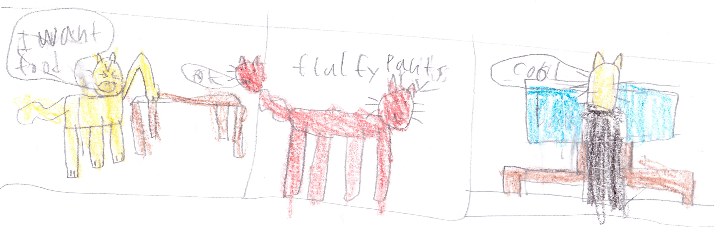

Chapter 3 Mr Fluffy Pants

7:00 o’cat KM (7 AM): King Cat woke up he walked down the stairs. He looked at his kitchen table it was very dirty which made King Cat very angry.
He screamed, “Where’s my food! Clean my table!!!”
“Right away sir,” said his most helpful and polite helper, Mr Fluffy Pants.
Mr Fluffy Pants was the most kind to King Cat in all of Cat Planet. After breakfast King Cat sat down and watched the news.
“Come on! Another report about Kitty saving Cat Planet?” King Cat said.
King Cat was about to change the channel when he saw something shiny.
“Very interesting…” said King Cat.